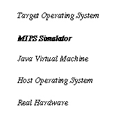

A MIPS R3000 Simulator
George Fankhauser
Computer Engineering and Networks Laboratory, ETH Zürich
This report describes the design
and implementation of a MIPS R3000 simulator implemented on top
of the Java Virtual Machine. It served as a development platform
for the small micro kernel operating system Topsy.
1. INTRODUCTION
Developing and debugging a new operating system on hardware is a time consuming and tedious job. Having a virtual machine that emulates the actual hardware on top of a stable system (e.g. Unix) is a great help. Although a simulator is slower than the actual hardware (unless it runs on a fast host that compensates for the cost of simulation), start-up and download times are usually shorter and general development progress is accelerated. In addition kernel debugging is easier since the debugger or communication stub does not run on the same machine.While developing Topsy, a small micro kernel for teaching purposes, the presented simulator has been developed. Since performance was not an issue, portability and reliability were favored and the MIPS virtual machine was setup on top of the Java virtual machine.

FIGURE 1. The Mips R3000 Simulator running on the top of the Java Virtual Machine
2. HARDWARE MODEL
Design of the Java-based MIPS-simulator centers around three modules:
1. Processor, coprocessor and instructions
2. Memory (RAM, ROM) and memory mapped devices
3. Exceptions and interrupts
All these concepts are modeled as Java classes or hierarchies of classes. In addition, a few classes are concerned with I/O features (the simulator runs as a terminal applications or as a demo-applet in a browser).
Processor, coprocessor and instructions
The MIPS machine with its memory management unit (known as coprocessor 0) uses a class Instruction which decodes MIPS II ISA binary 32-bit instructions and allows the processors interpreter to handle parts like displacement, registers and opcodes on a high level.
Memory and devices
A basic class models a generic memory region from byte n to n+k-1 and allows it to check for interrupts if a device is mapped into that area.Subclasses that model RAM, ROM, an UART for serial IO (Scignetics SCN2681) and a real-time clock (intel 8254) overwrite the basic read/write methods in order to provide their services. All memory accesses are like the hardware model bi-endian. A command line switch selects the endian-ness on startup. Another class (Memory) is responsible for the selection of the correct memory device. If no device was mapped to the requested address a bus error is generated.
Exceptions and interrupts
Exceptions
(which also include interrupts on the MIPS architecture) are directly
translated to Java-exceptions and were a major simplification
of the simulator. While interpreting instructions on the MIPS
virtual machine, one must be prepared to throw exceptions at very
different locations (e.g. virtual memory translations, physical
memory access, decoding coprocessor opcodes, checking hardware
interrupts). Being able to use exceptions in Java allows the MIPS
interpreter to regain control after such conditions.
3. DEBUGGER SUPPORT
The simulator class ëDebuggerí supports the symbolic remote debugging of the kernel or user program running on the simulator. It supports the standard gdb-protocol which includes
1. Register read/write
2. Memory read/write
3. Interrupting the running target
4. Single stepping
5. Continuing or detaching the target
Using these basic building blocks, all
gdb-functions become available (symbolic debugging etc.).The
debugger stub in the simulator runs as its own thread and accepts
new TCP connections from an instance of gdb running somewhere
on the net. The simulator yields control to the debugger every
instruction to allow lowest latency connections.The processor
model treats the debugger stub like an ordinary hardware device
that may generate interrupts. In addition, the MIPS BREAK instruction
is handled not like an exception but is directly interpreted and
sets the debugger state to ëstoppedí. Unlike a kernel
debugger on real hardware, this has the advantage that it leaves
the machine state untouched after the BREAK.To use the debugger
you need to install a cross-mips gdb with the simos target for
your machine. The source and certain pre-compiled binaries are
available from http://powderkeg.stanford.edu/. The gdb-stub inside
the simulator listens on port 2345.
4. USAGE
The MIPS simulator needs a kernel file in S-record fromat as an input. Only S3 (32-bit addressed data) and S7 (32-bit transfer address) are supported. Optionally, three flags (-b, -v, -t) control the endian-mode (big/little, little is default), a verbose and a trace mode.Verbose mode prints on all exceptions the cause of the exception and the current program counter and instruction in disassembled format.The trace mode prints each instruction that is executed. Larger traces take time but may be useful (e.g. the Topsy OS executes about 250í000 instructions until the first user program is loaded).
Example: java Simulator -b -v topsy.srec
loads the MIPS s-record code in
the file topsy.srec, addresses memory in bi-endian mode and prints
all exceptions verbosely to standard output.Note: Compilers
like gcc are able to generate directly s-records. Tools like objcopy
may convert ecoff or a.out to s-records.
5. KERNEL LOADER
The original hardware features a loader for Motorola S-records which is built into an EPROM and loads a kernel via serial interface (or TFTP on boards with ethernet). On the simulator, the loader is a Java method that interprets S-records from a hostfile. While the original could also be used as a loader for the simulator, the direct approach implemented here is faster and less cumbersome.
EPROM
Bypassing the code in the EPROM is controlled by the presence of an image file to load into ROM. If the file is not present, the ROM is initialized with an absolute jump to the starting address specified in the kernel file (S7-record). In either way, execution starts at the reset vector of the CPU (0xbfc00000 virtual).
6. LIMITATIONS
Pipeline
No instruction pipeline has been implemented. Instructions are executed sequentially, but pipeline characteristics like branch delay slots and load delays are built in to ensure compatibility to the original.
Speed
Running the simulator on top of another interpreted machine (Java VM) makes the MIPS machine quite slow. I used it with kaffe (a just-in-time compiler) on a Pentium 133MHz and was very happy with the performance.
FPU
Coprocessor 1 is not implemented.
UART
Not all features of the Scignetics SCN2681 controller are implemented (e.g. timers, transmission speed). However, the same driver that controls the original hardware is able to drive the simulated device with identical results.
Clock
The
clock is not driven by its own crystal as on the IDT board. It
runs at the same frequency as the CPU. This leads to a different
task switching behaviour on the simulator and of course, the programmed
real time is not correct. The advantage however, is the predictability:
If you start a kernel and observe a time critical error (race
condition) you can reproduce it accurately next time the simulator
is booted.